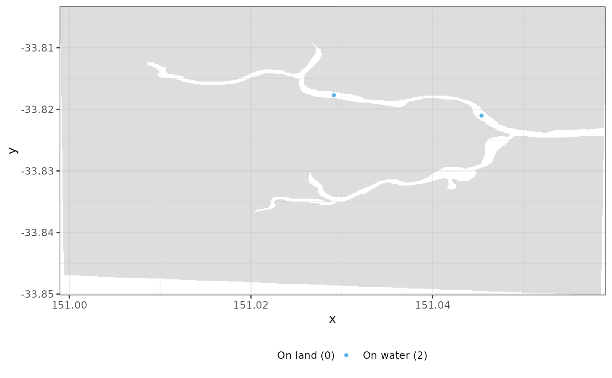

If you are reading this it's because RSP failed to detect all of your receivers within the base raster provided, or any of your receiver location was found to be in land. This function allows you to visually identify the station(s) with problem. Please either extend your raster to include all stations or fix receiver locations to be in-water.
plotRaster(
input,
base.raster,
coord.x,
coord.y,
size = 1,
land.col = "#BABCBF80"
)Either a data frame containing the coordinates of the stations or the output of one of
actel's main functions (explore, migration
or residency).
Raster object. Imported for example using shapeToRaster.
The names of the columns containing the x and y positions of the stations in the spatial object.
The size of the station dots
Colour of the land masses. Defaults to semi-transparent grey.
A plot of your base raster extent and the receiver locations.
# \donttest{
# Import river shapefile
water <- actel::shapeToRaster(shape = paste0(system.file(package = "RSP"), "/River_latlon.shp"),
size = 0.0001, buffer = 0.05)
#> M: Applying a small correction to the shape extent to ensure an integer number of pixels.
#> M: New shape extent:
#> SpatExtent : 150.948943357766, 151.109043357766, -33.9001889854332, -33.7532889854332 (xmin, xmax, ymin, ymax)
#> M: Chosen pixel size: 1e-04
#> M: Resulting pixel dimensions:
#> xmax ymax
#> 1601 1469
#> M: Burning the shape into a raster. This process may take several minutes depending on the shape size and chosen pixel size.
# Create a transition layer with 8 directions
tl <- actel::transitionLayer(x = water, directions = 8)
#> M: Constructing the transition layer. This process may take several minutes depending on the study area size and chosen pixel size.
# Import example output from actel::explore()
data(input.example)
# Plot raster and acoustic stations
plotRaster(input.example, base.raster = water, coord.x = "Longitude",
coord.y = "Latitude", size = 1)

# }